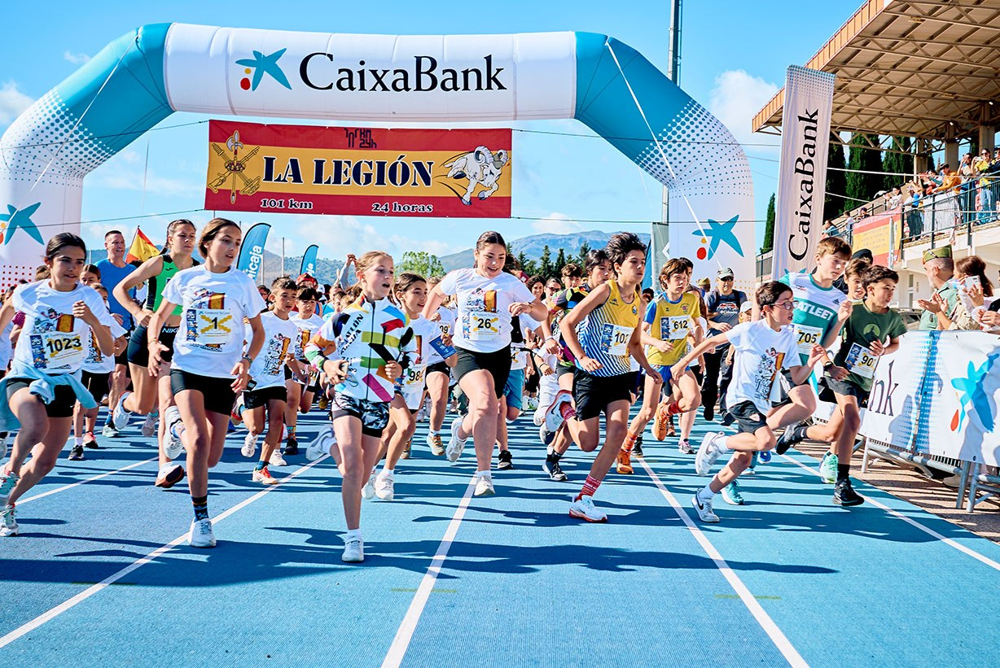

DERNIÈRE ACTIVITÉ CARITATIVE
DE M. ARACIL EN EUROPE
« Vous voulez repousser vos limites ? »
Rejoignez un ancien du Tercio Duque de Alba II
de la Légion espagnole pour un entraînement authentique
de callisthénie militaire.
LEGIONARIO ARACIL
📍 Informations Pratiques
Lieu : Salle de sport « Les Amoureux » — Nîmes
Adresse : 39 Rue des Amoureux, 30000 Nîmes
🔄 Alternance Hebdomadaire
L'activité fonctionne en alternance hebdomadaire :
- Semaine A : Tôt le matin — 7h00 à 9h00
- Semaine B : Après-midi / Soirée — 19h30 à 21h30
💪 Déroulement de la Séance
- Échauffement : 15 min (pompes, abdos, triceps, barre fixe)
- Marche ou randonnée contrôlée : 10 km (silence, pas de photos)

🎯 Deux Niveaux au Choix
| Niveau | Contenu |
|---|---|
| 👤 Civil | Marche + 90 min de randonnée |
| 🔥 Intensif | Séries 3×10 + sprint final avec sac de 2,5 kg ou 5–6 kg |


🎒 À Prévoir
- 🎒 Sac de combat 5 kg (recommandé)
- 📋 Copie de votre carte Vitale
- 👕 Tenue de sport et eau

⚔️ Règles
- 📵 Pas de selfies, pas de photos
- 🤫 Pas de paroles pendant l'effort
- 🥇 Discipline et esprit légionnaire
🔥 Places Illimitées